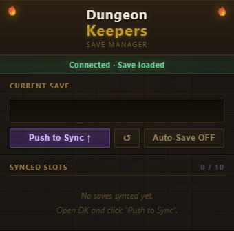

Dungeon Keeper
Dungeon Keeper is an incremental dungeon-management game. You are the unseen Keeper of an underground lair: settle into a biome, draw a monstrous race, gather resources, grow your population, put your creatures to work, raise buildings, research upgrades, and prestige to grow stronger across runs.
This wiki collects reference information about the game's systems, biomes, and the full creature bestiary. Use the navigation on the left to browse. You can open this page at any time from the version button in the top-right corner of the game.
Sections
Gameplay — the core loop and what each part of the interface does.
Biomes — every starting biome, the creature-suitability scale, and the full modifier glossary.
Creatures — the complete bestiary, grouped by creature type.
Changelog — recent version history.
Gameplay
The header tracks the passage of time as Day, Year, and Season. Time advances continuously while you play, driving production and population growth.
Resources
Resources are organized into three tiers of increasing complexity. Tier 1 materials are gathered manually or produced by simple buildings. Tier 2 materials require converter buildings that consume Tier 1 inputs. Tier 3 materials are rare magical substances produced at the end of long processing chains. Each resource has a storage cap that scales with the number of Storage buildings you have built (each Storage adds +50 to every material cap).
Tier 1 — Raw Materials
| Resource | Base Cap | Sources |
|---|---|---|
| Food | 100 | Manual: Scavenge Food · Farm (passive) |
| Wood | 100 | Manual: Fell a Tree · Lumber Camp (passive) |
| Stone | 100 | Manual: Break Stones · Quarry (passive) |
| Ore | 150 | Mine (passive, req. 3 Quarry) |
| Herbs | 100 | Herbalist's Den (passive, req. 3 Farm) |
| Crystals | 75 | Crystal Seam (passive, req. 3 Mine) |
| Coal | 150 | Coal Seam (req. 2 Mine) |
| Clay | 120 | Clay Pit (req. 2 Quarry) |
| Bones | 100 | Hunting Lodge (req. 3 Lair) |
| Sulphur | 80 | Sulphur Vent (req. 3 Mine + 1 Smelter) |
Tier 2 — Crafted
Crafted by converter buildings. Converters consume inputs each tick proportional to assigned workers. If inputs run short, output is reduced proportionally.
| Resource | Base Cap | Converter | Inputs |
|---|---|---|---|
| Iron | 150 | Smelter | 1 Ore → 0.5 Iron/worker/tick |
| Potions | 75 | Alchemy Lab | 0.8 Herbs → 0.3 Potions/w/t |
| Arcane Dust | 75 | Arcane Grinder | 0.5 Crystals → 0.3 Arcane Dust/w/t |
| Steel | 100 | Forge | 1 Iron + 0.5 Coal → 0.4 Steel/w/t |
| Bricks | 120 | Kiln | 1 Clay + 0.5 Stone → 0.6 Bricks/w/t |
| Cloth | 100 | Loom | 0.6 Herbs → 0.4 Cloth/w/t |
| Runes | 60 | Arcane Bench | 0.5 Crystals + 0.3 Arcane Dust → 0.2 Runes/w/t |
Tier 3 — Magical & Rare
| Resource | Base Cap | Converter | Inputs |
|---|---|---|---|
| Essence | 50 | Ritual Circle | 0.3 Arcane Dust → 0.05 Essence/w/t |
| Silk | 40 | Spider Nest | 0.5 Bones + 0.5 Food → 0.1 Silk/w/t |
| Mana Gold | 40 | Arcane Crucible | 1 Iron + 0.5 Arcane Dust → 0.1 Mana Gold/w/t |
| Ichor | 30 | Dark Altar | 1 Bones + 0.1 Essence → 0.05 Ichor/w/t |
| Mithril | 20 | Mithril Forge | 1 Steel + 0.5 Crystals → 0.02 Mithril/w/t |
Coin Economy
Coins are a parallel currency stored in copper pieces (cp). They are displayed as gold, silver, and copper (100 cp = 1 sp, 10 sp = 1 gp) and cap at 1,000 gp. Unlike material resources, coins are unaffected by Storage buildings and have no passive income until Taxation is researched. Mid-to-late buildings require coins in addition to material costs.
| Method | Amount | Availability |
|---|---|---|
| Taxation | Population × 1 cp per in-game day | After researching Taxation |
Population & Jobs
Your dungeon's Creatures count grows toward a population maximum determined by your housing (Lairs and Armories each provide +5 pop cap per building). Population needs food to grow and survive; a sustained food deficit leads to starvation. Creatures are assigned to jobs at production buildings — the Population panel shows how many are employed out of the total job slots available.
Build
The Build tab holds three manual gather actions — Scavenge Food, Fell a Tree, and Break Stones — plus all your buildings. Lairs provide housing, Storage raises all material resource caps by 50 per building, and production buildings create job slots that turn worker creatures into steady resource income. New building types unlock automatically once their prerequisite building counts are met.
Research
The Research tab lets you unlock technologies that improve your dungeon. Taxation is the first available research — it requires 50 Stone, 30 Wood, and 500 cp, and enables a daily coin income equal to your current population count.
Biome & Race
Every run has an identity: a biome (which grants starting resources and a set of persistent run modifiers) and a race of creature. See the Biomes and Creatures pages for the full reference. These systems are actively being expanded.
Prestige
When a run has run its course you can prestige — resetting your progress in exchange for lasting bonuses that carry into future runs. Your total number of prestiges is tracked across the game.
Biomes
A biome is the terrain a dungeon is founded in, set at the start of each run. Every biome grants a package of starting resources and a set of persistent run modifiers, and it shapes how well each creature type performs for the rest of the run. The 25 biomes are listed below, grouped into Natural, D&D Lore, and Magical origins.
Creature Suitability Scale
Every creature has a preferred biome (▲) and a difficult biome (▼). A creature's suitability for the active biome determines the production and population-growth bonuses or penalties it receives, on the scale below.
Biomes (25)
Dense canopy conceals your dungeon amid ancient trees. Food and wood are plentiful, but predators stalk the undergrowth.
Rocky heights above the treeline; your dungeon is hewn from the mountain itself. Stone is everywhere; warmth is not.
Sea-carved cliffs hold your dungeon above crashing waves. Fish and game are plentiful, but sea raiders take notice.
Blazing sun and endless sand hide mineral wealth beneath. Survival is the first and constant challenge of this biome.
Permafrost and silence; the cold kills slowly and the ground gives nothing. Only the strongest survive here.
Dark water and tangled roots; disease festers here, but life erupts from the decay. Many things call this home.
Open plains stretch to the horizon; your dungeon hides in a hillside. Easy expansion, obvious target.
Heat, ash, and the smell of sulfur. The earth bleeds stone and opportunity; structural stability is not guaranteed.
A natural underground network; your dungeon expands into pre-existing tunnels. Darkness is the price of depth.
Stifling heat and impossible density; food is everywhere, and so are things that want to eat you.
A frozen expanse carved by time. Isolation is both your shield and your prison; the cold never relents.
A half-drowned ancient civilization; your dungeon inhabits crumbling walls ankle-deep in water and mystery.
Eroded rock formations and choking dust — defensible terrain if you can survive on what little the land provides.
Far below any sunlit surface, in the realm of dark elves and stranger things. Rich beyond measure; strange beyond reckoning.
The ground still remembers the war. Bones outnumber stones; residual magic pools in craters and corroded armor.
Fog rolls in with the dead. The moor is alive with restless spirits and the slow surrender of all living things.
A crack in the mortal plane bleeds Abyss energy constantly. Demons trickle through; power flows in both directions.
Scorched peaks where ancient dragons once nested. Their power lingers in the stone and sky in equal measure.
Colossal bones provide shelter and raw material; the lingering power of titans seeps into your dungeon's foundations.
The boundary between worlds is paper-thin. The dead walk freely, the light never fully arrives, and dark knowledge seeps through.
The Feywild bleeds through in flashes of impossible color. Time is unreliable; life explodes everywhere; magic is uncontrolled.
Ley lines converge in a web of invisible power. Magic saturates the very stone; knowledge comes easily, caution less so.
A cursed land where life struggles and death triumphs. Dangerous for the living; a paradise for those beyond it.
All four elements war constantly. Chaotic and powerful — nothing is predictable, everything is possible here.
Where divine light once burned, creation flourishes. The easiest start — for those the land deems worthy. Darkness is repelled.
Modifier Glossary (100)
Every modifier a biome can carry. Tags: Positive = straightforward bonus, Negative = penalty or hazard, Mixed = trade-off, Future = requires systems not yet implemented.
Creatures
Creatures are the inhabitants of a dungeon. Each is a distinct D&D-inspired race that defines a run's playstyle, bonuses, and flavour. The full bestiary is listed below, grouped by creature type. Bonuses shown are creature-specific traits on top of the base type bonuses visible in the Race Lineage Tree.
Draconic & Reptilian
Undead
Goblinoids
Fey
Aberrations
Oozes
Elementals
Monstrous
Fiends
Giant-kin
Constructs
Lycanthropes & Beasts
Flora
Aquatic
Humanoids
◆ Legendary Creatures
These rare beings are not chosen at the start of a run — they must be earned. Some are said to appear only after a dungeon has proven itself through great feats of prestige or achievement. The exact conditions remain shrouded in mystery.
Research Tree
All 50 Era 2 researches and their prerequisites. Drag to pan · Scroll to zoom · Hover a node for full details. Only the 5 Tier 0 nodes are available at game start; each completed research unlocks 1–2 more.
Race Lineage Tree
All 91 playable creatures across 15 race types, organized by four lineage paths. Drag to pan · Scroll to zoom · Hover a node for details · Search to highlight.
Idle Save Manager — Companion Extension
Idle Save Manager is an optional Chrome extension built specifically for Dungeon Keepers. It automatically syncs your save to your Google account so you can pick up your run on any computer without ever touching an export string.

The extension popup — one click to push your save to the cloud.
Why use it?
Dungeon Keepers is an offline-progress game — your run accumulates over real-world time. Without the extension, swapping between machines means manually exporting your save, transferring the string, and importing it on the other side. Miss that step and you lose hours of banked progress. The extension handles all of that for you silently in the background.
Whenever you make meaningful progress, the extension pushes your save to
chrome.storage.sync — Google's built-in cloud storage for extensions.
On your other machine, open the game and the latest save is pulled down automatically.
The extension piggybacks on your existing Chrome sign-in. No new accounts, no external servers, no subscription — just install and forget about it.
If the cloud save is newer than your local save when you open the game, the extension alerts you and lets you choose which one to keep — so you never silently overwrite a longer run.
Installation
The extension is free and open-source. Because it is not yet published to the Chrome Web Store, installation is a quick one-time manual step:
- Visit the Idle Save Manager GitHub page and download or clone the repository.
- Open Chrome and navigate to
chrome://extensions. - Enable Developer mode using the toggle in the top-right corner.
- Click Load unpacked and select the folder you downloaded.
- The extension icon will appear in your toolbar. Sign into Chrome if you haven't already, and you're done.
How it works day-to-day
Once installed there is nothing to configure. The extension watches for save activity in the background and syncs automatically. On machines where you want the save pulled down, simply open the game — the extension fetches the latest cloud save on page load and applies it if it's newer than what's stored locally.
The extension popup (click the toolbar icon) shows when your save was last synced and lets you manually push or pull if needed — useful if you want to force a sync before shutting down a machine.
Privacy
Your save data is stored exclusively in chrome.storage.sync, which is encrypted in
transit and tied to your Google account. It is never sent to any third-party server. The extension
requests only the storage permission and access to the Dungeon Keepers tab.
Changelog
Renamed Rune Obelisk to "Focused Meditation" — an internal technique rather than a physical structure. Unlock threshold raised from 1 Essence Well to 10.
Added Rune Obelisk (Era 1 building, unlocks at 1 Essence Well). Each Obelisk increases all Essence Well output by +5% multiplicatively. Stacks with itself — 5 Obelisks give ×1.05⁵ ≈ +28% total.
Reworked era transition panel layout: grid gap removed, borders collapse so all panels share edges and touch. Right column (panels II and IV) offset 48px down for diagonal comic read-order stagger. Hovered panel lifts to z-index 1 so its gold border shows fully over neighbours.
Scriptorium now requires the Lore Keeping research (Era 2, prereq: Arcane Tapping) instead of a building unlock. Added Lore Keeping research card to the research panel.
Added Lore as a major Era 2+ research currency. Build Scriptoriums (unlocks at 1 Mage Tower) and assign workers to generate Lore per tick; each Scriptorium raises the Lore cap by 25. Mid-Era 2 researches now cost Lore alongside materials; late-Era 2 and Era 3 gateway researches drop coin costs entirely and require Lore only.
Added Mint Standard and Gold Coin Realm researches, completing the 4-tier currency chain. Researching Mint Standard phases out copper (all sub-sp costs round up to 1 sp; display shows gp+sp only); Gold Coin Realm phases out silver (all sub-gp costs round up to 1 gp; display shows gp only). Actual charges and display always agree.
Added Silver Currency and Gold Standard researches (both Era 1, economy chain). Currency display now unlocks progressively: raw cp before Silver Currency, sp+cp after, full gp/sp/cp after Gold Standard.
Fixed dev "Fill All Resources" button filling locked/invisible resources; it now respects the same shouldShowResource guard as the partial-fill button.
Rethemed the Era 1 → Era 2 transition with a full D&D aesthetic: parchment/gold/crimson palette, Cinzel serif font, doubled panel stagger, redrawn SVG scenes (lit torch, portcullis gate, creature silhouettes with crimson eyes, perspective corridor with sconces, heraldic shield crest), and rethemed canvas particles (torch sparks, golden dust motes, eye-glow pulses, candle flicker, coin glints).
Shipped the full Era transition experience: five comic panels with unique canvas particle animations (embers, light motes, orbiting sparks, corridor travellers, pulse waves), 3-second staggered activation, idle-aware 15-second auto-advance countdown, and the game tagline as the closing panel.
Expanded the Era 1 → Era 2 comic transition to five panels with richer lore. Added a dungeon-depth scene (I), a cracking-seal gate (II), the rising race silhouette (III), a branching dungeon map as the halls ignite (IV), and the full-width crest climax (V).
Era 1 → Era 2 now plays a four-panel comic transition: staggered SVG scenes with lore prose and the chosen race name, culminating in the Era II crest reveal. Resource rate indicators now reflect true per-tick deltas rather than a static estimate. Dev "Load Era 1" resets the race selection tree. Wiki Race Lineage Tree node overlap reduced.
Fixed overlapping nodes in the wiki Race Lineage Tree. Creature grids now use tighter column spacing, a larger gap from the type node, and a higher threshold before switching to 3-column layout, preventing clusters from bleeding into adjacent type regions.
Era 1 race selection now draws 2 random choices from the full creature roster for the chosen type, instead of always presenting the same hardcoded 2. All non-legendary races are now reachable. The random picks are stored in the save so they remain stable across reloads.
Added missing dates to all changelog entries (v0.11–v0.20) sourced from git history.
Unified creature entries in the wiki Creatures tab — all races now show their racial bonus in a consistent mod row, including Lizardfolk, Kobold, Yuan-ti, Wyvern, Dragonborn, Skeleton, Goblin, and Hill Giant. Corrected Metallic Dragon's entry (removed a duplicate bonus). Expanded the Race Lineage Tree canvas and node spacing to reduce overlap on the left and right branches. Added Extension wiki page screenshot embed. Introduced mandatory three-segment versioning (MAJOR.MINOR.PATCH) as a standing order.
Added a companion Chrome extension page to the wiki covering the Idle Save Manager — explains auto-sync, conflict detection, and zero-account setup, with a screenshot of the extension popup and a step-by-step installation guide. Also fixed identity panel tooltips (biome/race) appearing blank or off-screen by switching to JS-driven fixed positioning; fixed "Year 1, Day 1" displaying on the splash screen before any real progress is made; fixed the Reset Save button silently re-writing the save due to a race condition with the autosave tick; and updated the Era 1 dev loadout to preserve time and load 30 Essence Wells plus 5 of each other Era 1 building.
Redesigned the Import/Export panel in Settings → Data to match a cleaner layout: a full-width save box on top with all actions in a single row below (Import Game, Export Game, Save as File, Load File, Paste), and Restore Backup set apart on the right. Restore Backup rolls you back to an automatic checkpoint taken at your last era transition or prestige (or your last era transition if you've never prestiged). Verified end-to-end with an automated browser test.
Fixed two script errors that could prevent the game from loading, and reorganized the save tools in Settings → Data into Export (to clipboard, to file) and Import (from textbox, from file) rows. Added a Paste from Clipboard button that loads a save string into the textbox for review before importing. The save system was verified end-to-end with an automated browser test.
Save system overhaul modeled on Evolve. Saves are now LZString-compressed in storage, carry a version stamp, and pass through a migration step on load so old saves keeping working. Added Export/Import via copy-paste save strings (Base64) plus Download/Upload to a file, in Settings → Data. Importing writes the save and reloads, matching Evolve's flow.
D&D flavor pass on Era 1 manual actions: "Channel Influence" is now "Exert Will" and "Channel Mana" is now "Tap the Weave." The Mana Current's flavor text was rewritten to reference the Weave, the endless fabric all arcane magic is drawn from.
Added an Achievements tab to both The Chronicle splash panel and the in-game Info tab. Lists two named prestige achievements — Ancient Stonework and Veteran's Intuition — shown as locked placeholders with D&D flavor text.
UI polish and production fixes: Era 1 buildings renamed to fit a mental/awakening theme (Mana Current, Influence Reservoir, Mana Reservoir). Converters now halt consumption when output is at cap, preventing resource drain softlocks. Rate indicators are cap-aware and show flat +/- values with no units. Resources at storage cap are highlighted in amber. Left and right panels widened with larger fonts. A decorative divider separates the action row from the skill tree. Building tooltips with descriptions and cursor-tracking flavor text added.
Era 1 production chain added: Essence Well, Essence Conduit, and Mana Current automatically generate and convert Era 1 resources per tick, unlocking in a chain. Three reservoir buildings (Essence, Influence, Mana Reservoir) raise each resource's storage cap by 100 per building. Era 1 resource caps now start at 100. Manual gather actions are displayed in a 3-wide row with simplified yield labels, and Essence now appears on the resource bar.
Implemented Era 1 — the Awakening. Fresh runs begin in a new Awakening tab (Build/Research/Workers hidden in Era 1) where the player guides a disembodied dungeon mind through a 5-choice progressive tree. Three new Era 1 resources — Essence, Influence, and Mana — generate passively and are spent to unlock tree nodes. The tree covers all 15 creature types across three domain branches (The Deep, The Wild, The Beyond), ending with a race selection that transitions into Era 2 without any reset.
Added pause system and Accelerated Time bank. Time is now automatically paused while the splash screen is open so runs always start on Day 1. A ⏸/▶ button in the status bar lets you pause manually; every second paused banks 1 second of Accelerated Time. While playing, the bank drains at 1 banked second per real second (2× speed) until empty — the bank balance is shown in the status bar alongside Day/Year/Season.
Unified the wiki's visual design with the splash screen. The wiki now uses a deep black background, warm parchment text, gold accents throughout (nav title, active links, section headings, table headers, subheadings), and gold-tinted card borders — replacing the previous teal/green-gray game palette. The game's own UI is unchanged.
Fixed the splash screen reading the wrong save key, which prevented the run summary, the Continue button, and The Chronicle from recognizing existing saves. The run summary (e.g. "Year 3, Day 47 · Goblinoid · Deep Caverns") now appears between Awaken and Chronicle whenever a save exists. Also redrew the background d20 as ten individually-rendered icosahedron faces for a clearer side-view shape.
Major splash screen polish: rebuilt d20 as a mathematically correct icosahedron top-vertex projection (outer decagon + two interlocking pentagons + 10 spokes) with gravity physics and cursor repulsion. Added floating rune particles, scan-line effect on load, staggered title animation, run summary beneath Continue, pulsing NEW badge on The Archive after version bumps, and Enter/Escape keyboard shortcuts.
Splash screen upgraded: added a faded d20 silhouette background, a new "The Chronicle" button that displays aggregate run statistics (prestiges, biomes explored, races known, population peaks, resources gathered), and more D&D flavor in the lore text (Material Plane, Underdark, eldritch magic, adventurers).
Wiki Gameplay tab audited and corrected: removed stale references to manual gather actions that no longer exist (Chip Ore, Forage Herbs, Pry Crystals, Scrounge for Coin). Clarified that coins have no passive income until Taxation is researched. Build section now explicitly names the three gather actions that do exist.
Added the intro splash screen — shown on first visit, accessible via Dev panel. Includes title, lore premise ("you are a Dungeon Mind"), and Start/Continue/Archive buttons. Removed stale About blurb from the Info tab.
Added three new legendary creatures: Dracolich (Draconic — undead dragon, no food cost, arcane amplifier), Tarrasque (Monstrous — ultimate production engine with catastrophic appetite), and Kraken (Aquatic — massive storage and production at a steep food cost). Removed the redundant About blurb from the Info tab.
Updated the Creatures wiki with all new creatures (Gray Ooze, Ochre Jelly, Void Ooze, Water Elemental, Air Elemental, Shambling Mound, Vine Blight, Wood Woad, Human, Elf, Dwarf, Half-Orc, Gnome). Corrected type placements: Homunculus moved to Fey, Shadow Demon moved to Fiends, Chromatic Dragon/Lich/Sphinx removed from regular sections. Added per-creature bonus tags to every bestiary entry. Added a Legendary Creatures section with mysterious unlock descriptions.
Racial balance pass: capped all positive production and converter bonuses at 15% maximum. Added 5 new Ooze creatures (Gray Ooze, Ochre Jelly, Void Ooze) and 3 new Flora creatures (Shambling Mound, Vine Blight, Wood Woad). Added 5 new Humanoid creatures (Human, Elf, Dwarf, Half-Orc, Gnome) and 2 new Elementals (Water Elemental, Air Elemental). Moved Shadow Demon from Elemental to Fiend, moved Homunculus from Construct to Fey. Chromatic Dragon, Lich, and Sphinx are now hidden legendary races (removed from the Race Tree, accessible only through special in-game means).
Added Race Lineage Tree to the wiki. Interactive SVG starburst showing all 91 playable creatures across 15 race types organized into four lineage paths (Primal, Shadow, Arcane, Civilized). Supports pan, zoom, hover tooltips with type traits and creature lists, and a live search that dims non-matching nodes and highlights ancestors.
Added Era system (barebones). Buildings and research are now gated by era (1–3) via lookup maps; only era-appropriate content is visible in each era. The identity panel now shows the current era. Dev tab has three "Load Era N" buttons that instantly apply a canonical loadout (population, buildings, research, resources, worker assignments) for testing each era.
Implemented full racial bonus system for all 15 race types (91 individual creatures). Each race now mechanically applies unique effects — production multipliers, food consumption modifiers, gather bonuses, cap bonuses, coin income, and growth rate changes — stacking with research via the same bonus accumulation system. Type-level traits (e.g. Undead barely eats; Giants produce ×1.3 everything but fill Lairs slowly) combine with creature-specific modifiers (e.g. Lich amplifies arcane buildings; Shadow divides faster). Race traits are displayed in the identity panel tooltip.
Removed worker requirements from all buildings except Farm, Lumber Camp, Quarry, and Mine. All other buildings now produce or convert automatically based on building count rather than staffing. Hunting Lodge now produces both food (+0.5/s) and bones (+0.4/s). Production tooltip breakdown updated to show "×N" building counts for automated buildings.
Added Workers tab for manual worker assignment. All creatures default to Peasant (idle) and must be explicitly assigned to buildings via arrow buttons or a number input. Coins moved to the Population section as a "Money" row and the separate Coin Purse section was removed. The Employed row was also removed from the left panel since the Workers tab now serves that role.
Added live production breakdown tooltips to every resource row. Hovering a resource in the left panel now shows a floating tooltip listing each building contributing to that resource (with worker counts and per-second rates), converter buildings consuming it, and population food drain. Coin rows show daily taxation and Trade Caravan income. Tooltip content refreshes each tick.
Reduced manual gather actions to the three founding resources: Scavenge Food, Fell a Tree, and Break Stones. Ore, herbs, crystals, and coins are now production-only (from buildings). Three researches that referenced the removed actions were updated: Forager's Lore now boosts Herbalist's Den production +20%, Crystal Lore boosts Crystal Seam production +25%, and Village Ledger now adds +1 cp per creature per day to taxation instead of boosting a scrounging action.
Fixed two research bonus bugs. The Rationing research (foodConsumption: 0.80) was incorrectly adding instead of multiplying in getResearchBonus, causing population to eat 80% more food rather than 20% less. Trade Caravans income was being halved by an erroneous division by TICKS_PER_DAY inside a block that already only runs once per day. All 50 researches now apply their stated effects correctly.
Added a pan/zoom research tree to the wiki's new Research tab. The tree shows all 50 Era 2 researches, their prerequisite chains, costs, and effects on hover. Restructured research prerequisites so only 5 are visible at game start; each completed research unlocks 1–2 more, keeping the queue tight throughout the run.
Added 50 Era 2 researches across 11 chains (gathering, agriculture, forestry, mining, hunting, crafting, storage, economy, arcane, and the Era 3 gateway). Introduced a full research bonus engine: production multipliers, gather bonuses, converter bonuses, cap bonuses, housing bonuses, food consumption reduction, and trade income. Stage 5 buildings now require matching research in addition to building counts. Fixed the dev tab Reset Save button, which was silently blocked by browser dialog suppression.
Major resource and building expansion. Added 19 new materials across three tiers: raw (ore, herbs, crystals, coal, clay, bones, sulphur), crafted (iron, potions, arcane dust, steel, bricks, cloth, runes), and magical (essence, silk, mana gold, ichor, mithril). Added 22 new buildings across 5 stages including converter buildings that consume inputs to produce outputs. Added Taxation as the first researchable upgrade, enabling daily coin income from population.
Launched the Dungeon Keeper Wiki (wiki.html) with Biome and Creature reference sections. The Biome and Creature tabs were removed from the main game and now live exclusively in the wiki. Introduced version-based cache-busting: all local assets load with a ?v=VERSION query string so browsers always fetch the latest files after an update.
Added a MOD_DESCRIPTIONS map covering all 100 biome modifiers, organized into 7 categories: Resource Production, Population, Buildings, Combat & Defense, Magic & Research, Prestige & Meta, and Hazards / Hard Mode. Modifier tooltips now appear when hovering active run modifiers in the identity panel, showing the exact mechanical effect of each modifier. Race trait tooltips similarly enhanced with full effect descriptions.
Hardened devRerollBiome() against crashes when called before the identity panel elements exist in the DOM. Added null guards throughout updateIdentityPanel() so older saves missing run.mods or meta.seenBiomes load cleanly without throwing. Both functions now bail gracefully if their required DOM targets are absent.
Added totalPrestiges to gameState.meta, persisting across resets via save/load. The Info tab now shows your lifetime prestige count alongside per-run stats. Prestige flow updated: now prompts for confirmation, zeroes all per-run stats without hardcoding keys, increments the counter atomically with the save, and then calls selectStartBiome(false) to assign the next run's biome and mods.
Added all 25 biome data objects to game.js (the BIOMES const), each with type, flavour description, starting resources, run modifier list, and best/hard creature affinities. Implemented selectStartBiome(isFirstRun): first runs always receive Verdant Forest with four curated positive starter mods; prestige runs draw a weighted random biome from the unseen pool and append 1–2 extra wildcard mods from the positive/negative extra-mod pools. Biome seen-tracking stored in meta.seenBiomes.
Introduced the in-game identity panel showing the active biome name, type badge, run modifiers (with positive/negative colouring), and selected race. Added 25 fully-specified biomes — 13 Natural, 6 D&D Lore, 6 Magical — each carrying starting resources, a flavour description, 2–5 run modifiers, and creature affinity lists (best and hard picks). Added a dev tool to inspect current biome state and manually reroll the biome mid-run.
Reorganised the in-game biome display into three labelled sections (Natural Biomes · D&D Lore Biomes · Magical Biomes) and the modifier glossary into 7 category headers. Added left-border colour coding to biome cards by origin type: green for Natural, purple for D&D, gold for Magical. Tightened the biome card layout with a dedicated start-resource line and aligned modifier/affinity chip rows.
Built the full biome tab visual system: five-tier suitability legend (Excellent / Good / Neutral / Challenging / Hostile) with per-tier production and growth effect callouts; biome cards with embedded modifier chips (green positive, red negative) and creature affinity chips with suitability colour coding. Added distinct colour-coded type tags for all 15 creature categories (Draconic, Undead, Goblinoid, Fey, Aberration, Ooze, Elemental, Monstrous, Fiend, Giant, Construct, Lycanthrope, Flora, Aquatic, Humanoid).
Added the creature selector tab with the full bestiary: 70+ creatures spanning 15 type categories, each entry showing a flavour description and its preferred and difficult biome. Creature entries are grouped under styled category headers with matching type-tag chips. Introduced the tag-* CSS classes for all creature types.
Added persistent game settings stored in a separate localStorage key. Three configurable options: autosave interval (Off / 1 s / 5 s / 30 s), number display format (Full Numbers / Abbreviated), and reduced animations toggle. Added a peakPopulation field to the stats object. The Info tab now shows current day, year, season, population, peak population, and a manual save button alongside the autosave status. Settings persist independently of the main save so a reset does not wipe preferences.
Implemented the full 5-tab layout: Build (gather actions + buildings), Research (placeholder), Info (stats), Settings, and Dev (cheat tools). Each tab is a hidden div revealed by switchTab(). The Build tab shipped with the first 5 buildings (Lair, Farm, Lumber Camp, Quarry, Storage) and 3 manual gather actions. Added day/season/year flash animations that briefly highlight the relevant counter whenever a unit ticks over. Tuned the game tick rate and improved tab button hover and active styles. The Dev tab includes controls to fill all resource caps, force-advance time, and inspect game state.
Added the ROOMS data structure in data/rooms.js defining the first five buildings with costs, exponential cost scaling, job slot counts, housing bonuses, and passive production rates. Implemented the core building engine in game.js: build(), getBuildCost(), getHousing(), getProduction(), getCaps(), and checkUnlock(). Buildings unlock automatically once their prerequisite building counts are met. Storage buildings raise all resource caps by a flat amount per building rather than producing a resource.
Replaced system fonts with Google Fonts (Lato). Full CSS overhaul establishing the dark colour theme via CSS custom properties: --bg, --bg-panel, --bg-hover, --text, --text-muted, --accent, --label, --border. Added styled scrollbars, a fixed version badge, and a base three-column layout grid (left sidebar · center content · right sidebar) that all subsequent UI builds on.
Initial development. Established the core game loop: tick() runs on a fixed interval driving the day/season/year calendar, passive resource production from buildings, population growth when food is in surplus, and a starvation death timer when food hits zero. Manual gather buttons for food, wood, stone, and coins. Population grows toward a housing cap and consumes food each tick. Save and load via localStorage using JSON.stringify/parse. Prestige button resets all run progress while preserving meta stats. Basic resource cap display and flash-on-change UI feedback.